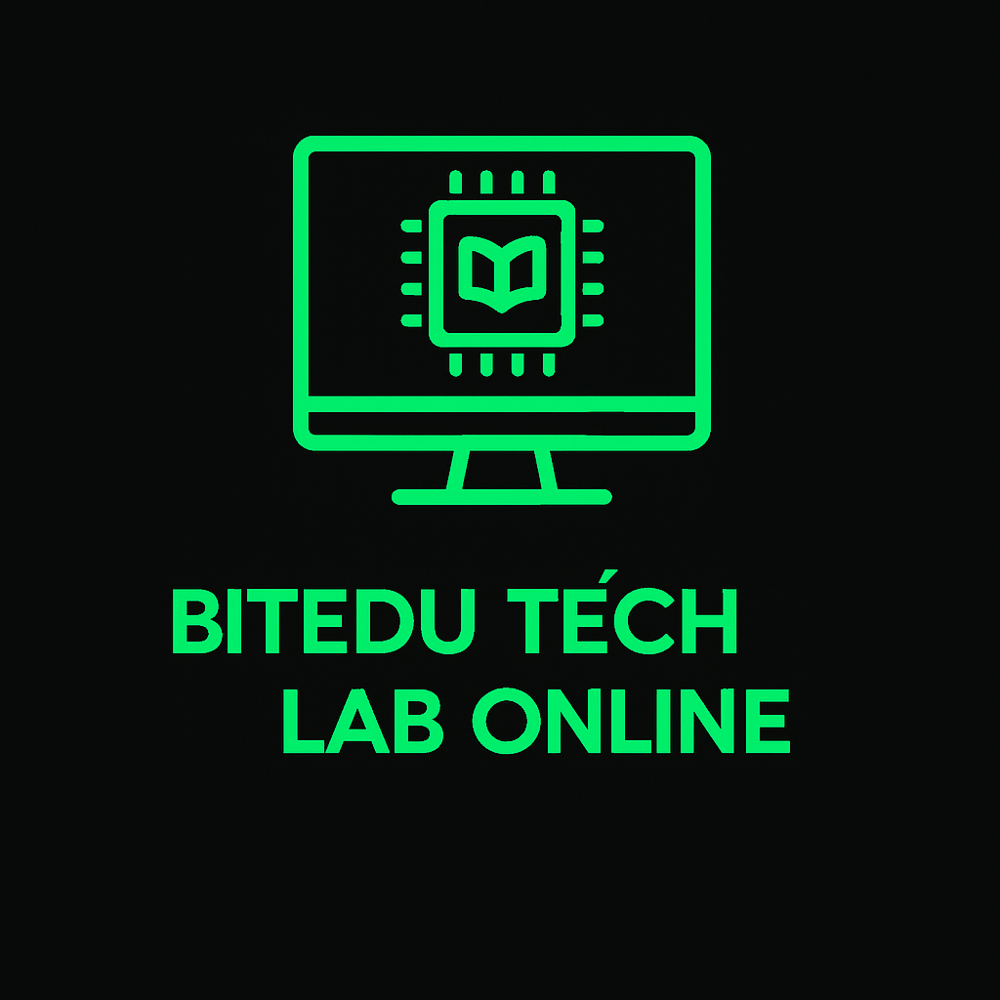
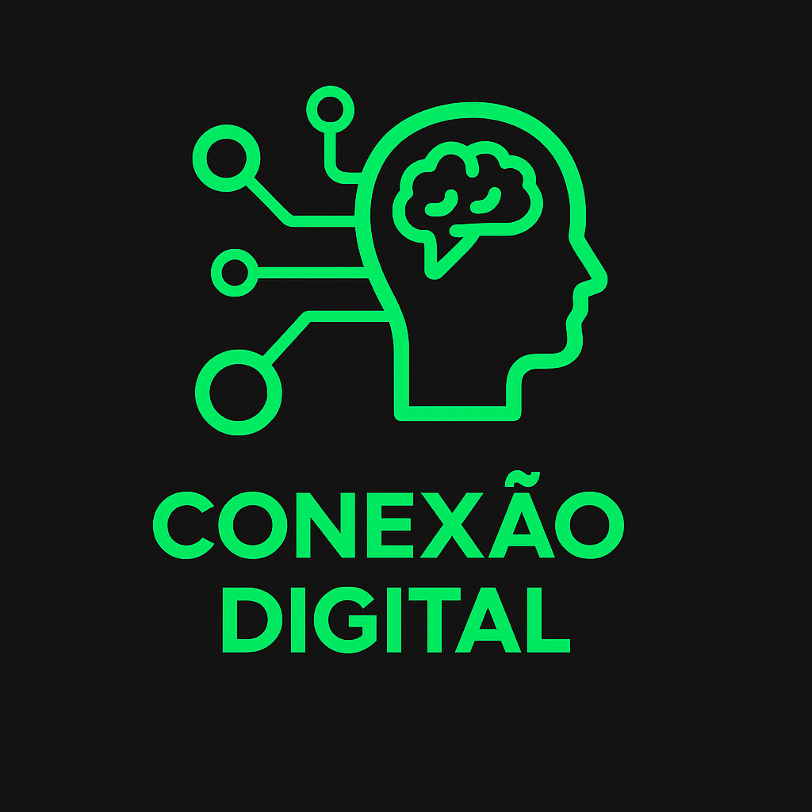
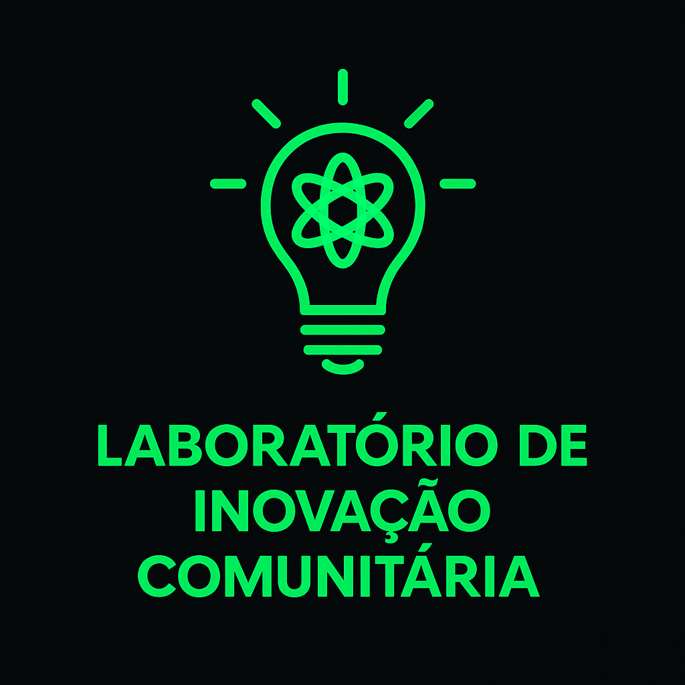

Projetos
BitEdu Tech lab Online
Aprenda programação, robótica e pensamento digital com a BitEdu. Todos os nossos cursos são 100% gratuitos e abertos a quem quer transformar curiosidade em futuro.
Conexão Digital
O Projeto Conexão Digital leva computadores, internet e aulas de tecnologia para comunidades de baixa renda. Os jovens aprendem programação, robótica e pensamento digital, desenvolvendo habilidades que abrem novas oportunidades e os conectam ao mundo digital.
Laboratório de Inovação Comunitária
No Laboratório de Inovação Comunitária, os alunos participam de oficinas práticas e desafios criativos, aplicando tecnologia para resolver problemas reais em suas comunidades. O projeto estimula a criatividade, o protagonismo jovem e a construção de soluções práticas.